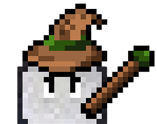
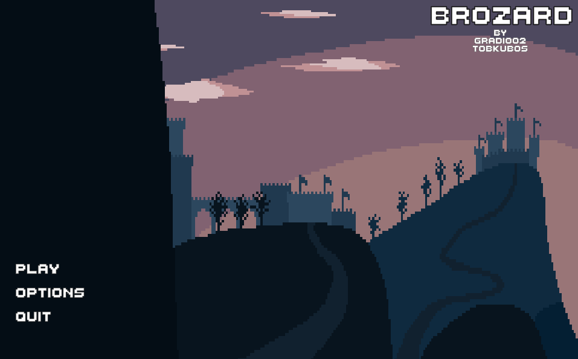

Title: Brozard
Genre: Roguelike
BROzard is a roguelike game, where the player takes on the role of a wizard who fights against slimes. After each wave, the player has to allocate points to improve his battle skills. Additionally, he gets powerful artifacts every few waves. There is also a chance of a thunderstorm, which will reduce visibility. You can encounter up to 5 different slimes and their mutated versions as well!

In game menu

Character upgrades